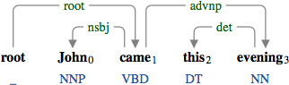
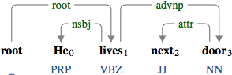
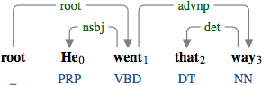
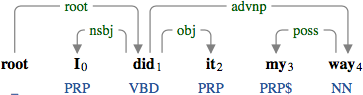
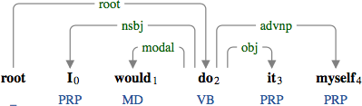
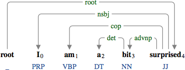
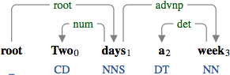
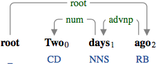

An adverbial noun phrase (advnp) is a noun phrase that modifies another element in the sentence as an adverbial.
Similarly to the adverbial clause, the adverbial noun phrase can take a semantic role.

A temporal noun phrase "this evening" modifying "came".

A locative noun phrase "next door" modifying "lives".

A directional noun phrase "that way" modifying "went".

A manner noun phrase "my way" modifying "did".

An adverbial noun phrase as a reflexive "myself".

An adverbial noun phrase "a bit" modifying the adjective "surprised".

An adverbial noun phrase "a week" modifying the noun "days".

An adverbial noun phrase "two days" modifying the adverb "ago".